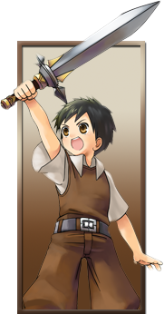
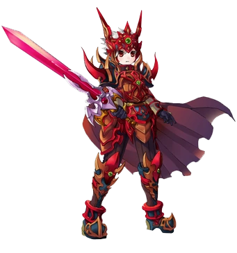
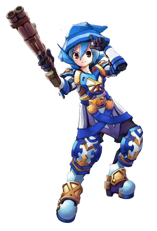
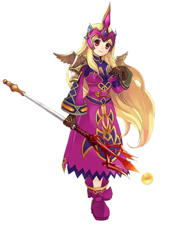
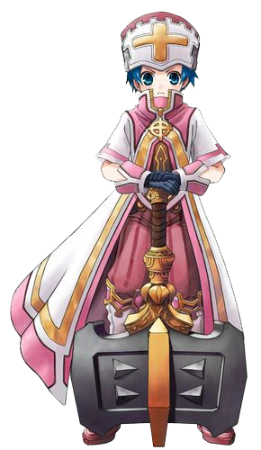
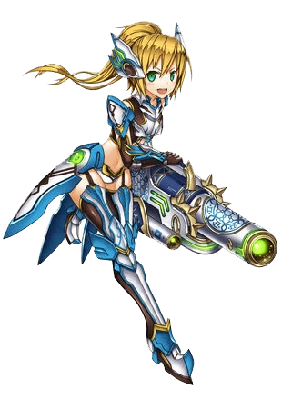
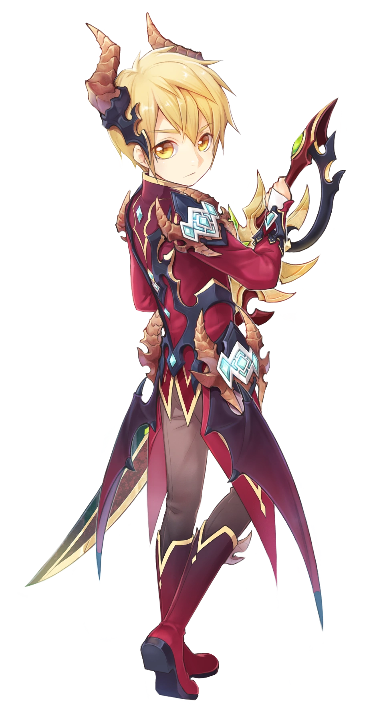

Categoría para las diferentes clases de Grand Fantasia.
Novato
Al entrar en el mundo de Grand Fantasía, comienzas tu viaje como un novato en la isla de Siwa.
¡Aquí es donde comienzas tu formación como Mesajero de los Sprites! Si bien esta pequeña isla es el paraíso perfecto para aprender los conceptos básicos, con el tiempo pasarás a ocuparte de asuntos mayores y pasarás a ser parte de clases superiores.

br
Guerrero
La clase Guerrero es la evolución de los Luchadores y al igual que estos, se especializan en el daño físico cuerpo a cuerpo.
Los Guerreros pueden utilizar una gran variedad de armas, tanto cuerpo o cuerpo como a distancia, limitándose siempre al daño físico. Su armadura es pesada ofreciendo una gran capacidad de aguante.

Ventajas
Múltiples Armas: Los Guerreros cuentan con una gran variedad de armas siendo muy versátiles.
Armas de Largo Alcance: Los Guerreros también pueden usar arcos y armas de fuego.
Daño explosivo y DPS: Los Guerreros pueden producir grandes cantidades velozmente.
Aguante: Cuentan con gran cantidad de HP y defensas siendo capaces de bloquear el avance
enemigo.
Desventajas
Corto Alcance: Aunque sean capaces de llevar armas a distancia, su principal fuente de daño
siempre es cuerpo a cuerpo.
Poca Supervivencia: A pesar de su alto HP y defensas, al estar siempre cuerpo a cuerpo son
mas propensos a morir.
Autosuficiencia: Sin habilidades para protegerse o recuperarse son susceptibles a efectos
malignos y verse sobrepasados por el daño.
Arquero

La clase Arquero es la evolución del Cazador. Esta es una clase que usa espadas y arcos/armas de fuego, lo que significa grandes niveles en ataques a distancia. Al llegar a nivel 30, habrá un nuevo cambio de clase, donde el jugador puede elegir una de las clases de la evolución: Ranger o Asesino.
Ventajas
Evasión: El Cazador es la clase con más evasión.
Ataque de larga distancia : También utilizan principalmente habilidades y ataques a larga distancia.
Desventajas
No hay curas : Los cazadores no son capaces de auto-sanarse, es decir, no tienen armas, ni habilidades de Auto-Cura.
Poca HP : Los cazadores normalmente, tienen poco HP.
Poca defensa : Los cazadores tienen baja defensa y al ser aturdidos, son completamente vulnerables.
Mago

Los Magos son una de las clases de segundo rango de Grand Fantasia. Siguen teniendo un alto ataque mágico que se fortalece a medida de que aumentan de nivel. Al nivel 30 pueden escoger entre ser Mago Brujo o Nigromante.
Ventajas
Gran daño mágico : De por si ellos son de una sola rama, razón por la cual tienen tremendo daño mágico.
Capacidad de inmovilizar : Los Magos poseen skills para aturdir y amarrar etc, lo cual proporciona una oportunidad para acabar rápido con el enemigo.
Económico: Los magos solamente son capaces de equiparse báculos y reliquias, por lo que lo hace la clase más económica del juego.
Desventajas
Débil Defensa : Los magos de por si son una de las clases con menos defensa del juego, tienen una capacidad defensiva muy baja.
Carne de Cañón : Sobre todo con los jefes, para los hechiceros no les son fáciles las luchas prolongadas y se encontrarán rápidamente muertos si tienen una malicia muy alta en los grupos.
Bastante consumo de pocimas (MP - HP) : Devido ah sus skills y poca resistencia.
Sacerdote

Los sacerdotes son una de las clases de Grand Fantasia. Se especializan en skills de curación y ataque mágico. Tienen la capacidad de usar escudos, reliquia, mazas y báculos. Al nivel 30 pueden escoger entre ser Clérigo o Sabio.
Ventajas
Requerido para grupos : Como healers serán bienvenidos en los grupos.
Buena Defensa : El sacerdote adquiere una buena defensa usando escudo.
Alto índice de Curación : Curacion de 3000 HP.
Desventajas
Hechizos muy lentos: Algunos de los hechizos de los sacerdotes tienen un enfriamiento muy bajo.
Dependencia de grupo : En grupo tu papel es el de curar a otros.
Alto consumo de MP : Los skills de sacerdote consumen mucho MP.
Ingeniero

Los Ingenieros son una clase mecánica de segundo nivel de Grand Fantasia. Al igual que los Mecánicos, se especializan en ataque corta y larga distancia equilibrado, con la diferencia que estos poseen debuff de defensa y curación de estados. Pueden llevar armas mecánicas de una o dos manos y cañones. Al nivel 30 pueden escoger ser Artificiero y Artillero.
Ventajas
Daño Equilibrado: Los Ingenieros poseen un ataque cuerpo a cuerpo y a distancia equilibrado.
Skills Equlibrados: Los Ingenieros poseen skills a distancia y skills cuerpo a cuerpo.
Puntos de Salud Moderados: Las armaduras de los Ingenieros proporcionan Vitalidad, que aumenta los Puntos de Salud.
Debuff de Defensa: Los Ingenieros pueden bajar la defensa con el uso de un skill, algo muy útil contra bosses o incluso jugadores.
Curación de estados a bajo nivel: : Los Ingenieros son la primera clase que, sin especialización, poseen skill de curación de debuffs.
Desventajas
Dependencia de Núcleos de Carga: Las clases mecánicas poseen una especie de esferas llamadas Núcleos de Carga, necesarios para ejecutar casi todas las skills de estas.
Bajos Puntos de Maná: En compensación de sus puntos de salud, los mecánicos poseen pocos MP.
Dependencia de Éteres: Al igual que las clases mágicas y curanderas, los mecánicos dependen mucho de los éteres, aunque no tanto como estas.
Viajero

Los viajeros es la clase más reciente de Grand Fantasia. Su daño se basa tanto en ataques cuerpo a cuerpo como a distancia, usando magia como su principal fuente de poder.
En comparación al resto de clases no cuentan con una gran variedad de armas. Solo pueden usar Espadas a dos manos y Llaves. Al nivel 30 pueden escoger ser Duelista y Relojero.
Ventajas
Daño: Aunque solo disponga de Espadas a dos manos, no te desanimes, el daño es bastante elevado y compensa en gran medida su poca variedad.
Ataque a Largo alcance: Gracias a la Llave tendrás un ataque a largo alcance con un daño decente (Aunque su velocidad no sea la más alta la Llave puede darte buenas bonificaciones a medida que avances en tu clase).
Desventajas
DPS: No cuentan con un buen DPS por el tipo de equipación que usan.
Armas: Cuenta con un extremadamente limitado repertorio de armas por lo que se limita su estilo de juego.
Errores: Para esta clase hay un bug que no te permite usar títulos de ninguna Mazmorra. (Reparado)